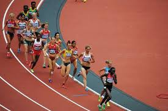
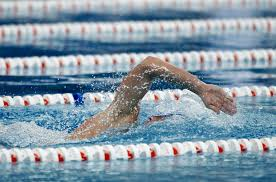
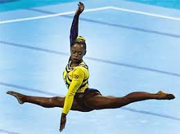

O atletismo é uma das modalidades mais tradicionais e inclui diversas provas de corrida, saltos e arremessos.
A natação é uma modalidade popular que envolve diversas provas de velocidade e resistência em piscina.
A ginástica artística é conhecida por suas apresentações de força, flexibilidade e coordenação.
O judô é uma arte marcial de origem japonesa e é uma das modalidades de combate presentes nas Olimpíadas.

O vôlei de praia é uma modalidade que combina agilidade e tática, jogada em duplas na areia.